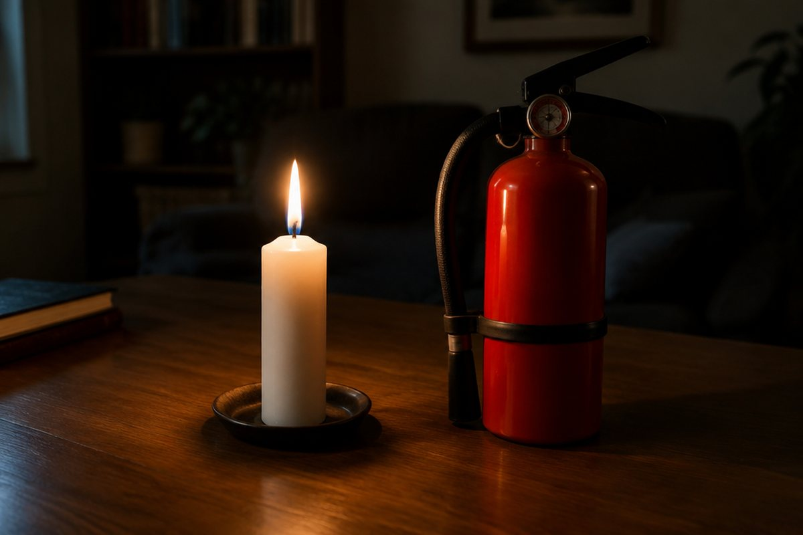

불은 어떻게 타고, 어떻게 끌까?

캠핑장의 모닥불, 생일 케이크의 촛불! 물질이 탈 때는 무엇이 필요하고, 불을 끄려면 어떻게 해야 할까요?
물질이 탈 때 나타나는 현상
물질이 산소와 빠르게 반응하여 빛과 열을 내는 현상을 '연소'라고 해요.
초나 알코올이 탈 때는 빛과 열이 나서 주변이 밝고 따뜻해지고, 시간이 지나면 탈 물질의 양이 줄어들어요.
연소의 세 가지 조건
물질이 타려면 세 가지가 모두 있어야 해요. 바로 '탈 물질', '산소', 그리고 '발화점 이상의 온도'예요.
발화점은 물질이 불에 직접 닿지 않아도 스스로 타기 시작하는 가장 낮은 온도예요. 물질마다 발화점이 달라서 같은 온도로 가열해도 먼저 불이 붙는 물질이 있어요.
크기가 다른 아크릴 통으로 촛불을 덮으면 큰 통 안의 촛불이 더 오래 타요. 산소가 더 많기 때문이에요.
연소 후 생기는 물질
초가 타면 물과 이산화 탄소가 생겨요. 푸른색 염화 코발트 종이가 붉게 변하면 물이 생긴 것이에요.
초가 탄 뒤 집기병에 석회수를 넣고 흔들면 뿌옇게 흐려지는데, 이것으로 이산화 탄소가 생겼음을 알 수 있어요.
불을 끄는 방법 – 소화
불을 끄는 것을 '소화'라고 해요. 연소의 세 가지 조건 중 한 가지 이상을 없애면 불이 꺼져요.
탈 물질을 없애고(촛불 심지 자르기, 가스 밸브 잠그기), 산소를 막고(모래나 담요 덮기, 소화기 사용), 온도를 발화점 아래로 낮추면(물 뿌리기) 불이 꺼져요.
알코올램프는 뚜껑을 덮어 산소를 막아서 불을 꺼요.
화재 안전
기름이나 전기 때문에 난 불에 물을 뿌리면 불이 더 커지거나 감전될 수 있어서 소화기나 모래를 써야 해요.
불이 나면 '불이야!' 하고 크게 외치고 119에 신고해요. 젖은 수건으로 코와 입을 막고 몸을 낮춰 계단으로 대피해요. 승강기(엘리베이터)는 타지 않아요.
핵심 낱말
- 연소
- 물질이 산소와 빠르게 반응하여 빛과 열을 내는 현상
- 발화점
- 물질이 불에 직접 닿지 않아도 스스로 타기 시작하는 온도
- 소화
- 불을 끄는 것
- 석회수
- 이산화 탄소를 만나면 뿌옇게 흐려지는 용액
- 염화 코발트 종이
- 물에 닿으면 푸른색에서 붉은색으로 변하는 종이
한 줄 정리
- 연소는 물질이 산소와 빠르게 반응해 빛과 열을 내는 현상이에요.
- 연소에는 탈 물질, 산소, 발화점 이상의 온도가 모두 필요하고, 타면 물과 이산화 탄소가 생겨요.
- 세 조건 중 하나 이상을 없애면 불이 꺼지고(소화), 불이 나면 119 신고 후 몸을 낮춰 대피해요.
학교 교육과정 연결
- [6과14-02] 물질이 연소할 때 나타나는 공통적인 현상을 관찰하고, 연소의 조건을 찾을 수 있다.
- [6과14-03] 연소 전과 후의 물질을 비교하여 연소 과정에서 물질의 성질이 달라짐을 설명할 수 있다.